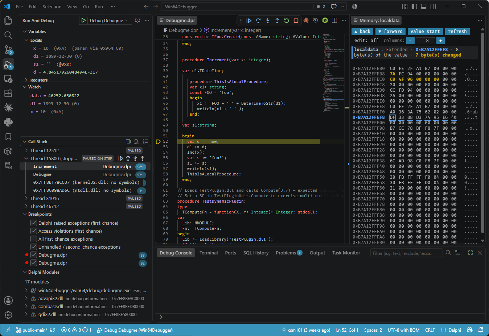

VS Code · Delphi · Win32 & Win64 · Open source
Delphi Debugger for VS Code and AI Agents
A real debugger for Delphi applications, outside the Embarcadero IDE — driven from VS Code, or handed to an AI agent over MCP.

What it is
This is a debugger for Delphi applications, written in Delphi, built directly on the Windows Debug API — not a wrapper around the Embarcadero IDE debugger. It plugs into Visual Studio Code through the Debug Adapter Protocol, so you get the editor's normal debugging experience — gutter breakpoints, the Variables and Watch panes, hover data tips, the call stack — against a Delphi executable that the Embarcadero IDE never has to open.
Three programs share one engine, DebuggerCore: the Windows debug-event
loop, the TD32 / .map / .rsm / .dcp / JCL symbol
readers, and the Pascal expression evaluator.
| Component | What it does |
|---|---|
Debug adapterVisualStudioCodeDelphiDebugger.exe |
The debugger itself, speaking DAP: breakpoints, stepping, call stacks, variables, expression evaluation, memory, registers, disassembly. Any DAP client can drive it. |
| VS Code extension | The client that makes it usable in the editor — the delphi-win64 debug type, the process picker for attaching, the Delphi Modules tree view, a custom memory view, status-bar progress, and an editor for the exception rules. |
MCP serverDelphiDebuggerMcp.exe |
The same engine exposed to an AI agent over the Model Context Protocol, as semantic tools, so the agent can run a program and read its real state. See MCP & AI agents. |
The two frontends are thin. TDebugSession is the shared facade — it owns the
engine behind the IDebugTarget interface, the symbol providers, source
resolution and the state machine; TDapServer and TMcpServer sit
on top of it and share every step below.
How that is wired.
What it does
The short version, with the chapter that covers each in full:
- Breakpoints — source line, conditional, hit count, logpoints, address breakpoints from the Disassembly View, hardware data breakpoints on the CPU's four debug registers, and Set Next Statement.
- Stepping — over, into and out, per thread, optionally at instruction granularity for code with no line table at all.
- Exception handling — first-chance breaks with correct passthrough, four filters, and an ordered rule engine that can ignore, log or break per exception class, message, unit or line.
- Variable inspection — locals, parameters and globals; objects, records and dynamic arrays expand; generic collections enumerate; closures show their captured state; values can be written back.
- Threads and call stack — every thread listed with its announced name, any thread's stack and locals readable while stopped, and an opt-in raw stack scan for code the unwinder cannot get through.
- Registers, memory and disassembly — a read/write registers scope, a memory view that marks a value's byte extent and flashes what changed, and a real x86/x64 Disassembly View.
- Expression evaluation — a full Pascal grammar in Watch, hover and the Debug Console, including method and property-getter calls that execute live in the debuggee.
- Multi-BPL applications — per-module symbols loaded as each package maps, breakpoints inside a package that has not loaded yet, and unwinding across host and package boundaries.
- Attach — attach to a process that is already running, by id or by name, and detach leaving it alive.
- Debugging from an AI agent — the same engine over MCP, so an agent sets a breakpoint and looks instead of inferring behaviour from the source.
What it debugs
Win32 and Win64 Delphi applications, single-EXE or multi-BPL. The adapter is always a 64-bit process whichever target it debugs: a 32-bit application is debugged across the WOW64 boundary, and the machine model is chosen from the target's PE header before the process is even created. One binary, nothing to pick at install time. Why that matters on large projects.
Applications built as a host EXE plus runtime packages loaded with
LoadPackage are the project's core use case, not an afterthought — see
Multi-BPL and modules.
On a 32-bit target there is one hard limit: local variables and parameters need an
unoptimised (-$O-) build. Run control — breakpoints, stepping, call stacks —
works on optimised 32-bit builds either way; only variable readout does not.
Building the debugger from source needs Delphi 10.3 Rio or later. For the application being debugged there is no stated minimum version: the debug-information layouts the engine reads were developed and measured against recent Delphi releases, and older compilers' layouts have not been verified. What the debugger deliberately does not do is listed under Known limitations.
The manual
Everything above is a summary. The documentation itself is in four sections.
Getting started
Download the setup, install the extension and the adapter, and see what else is worth having alongside it.
VS Code tutorial
Twelve chapters, from compiler settings and launch.json to breakpoints, exceptions, memory and the settings reference.
MCP & AI agents
Register the MCP server, read the tool reference, and see the prompts that make an agent debug instead of guess.
Architecture
How the engine, the two frontends and the symbol readers fit together, for anyone reading or extending the source.